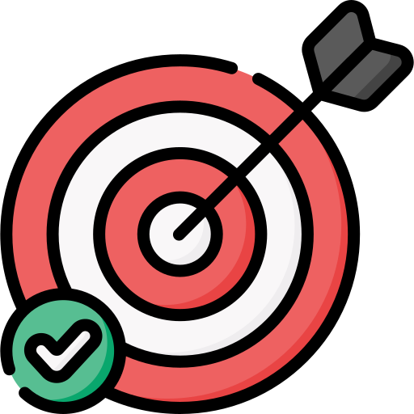

Thorium is a fork of Chromium, but tries not to deviate too strongly from the Chromium user experience. Icons and branding are changed, but it is still destinctly and recognizably Chromium. It aims to be "the fastest browser on Earth", as per its motto on the main page, striving for the highest performance. This is its principle goal. It also aims to enhance privacy, security, and usability. It makes use of compiler optimizations and patches from various sources, including popular Chromium forks such as Ungoogled Chromium, Bromite, Iridium, Brave, and Vanadium, as well as patches developed by me and the Debian/Ubuntu package maintainers.
Ensuring user safety means carefully balancing usability, capability and security. If we’re doing it right, these aspects should all work hand-in-hand. In most cases, we want security to be nearly invisible to the user. We update transparently and try to provide safe defaults without asking users to make security decisions. When security indicators are surfaced, we aim to clearly explain the situation and highlight the most important information, such as the hostname and SSL state in the address bar.
Our goal in designing Chrome’s security architecture was to layer defenses, and avoid single points of failure. Chrome’s sandbox architecture represents one of the most effective parts of this strategy, but it’s far from the only piece. We also employ the best available anti-exploit technologies—including ASLR, DEP, JIT hardening, and SafeSEH—along with custom technologies like Safe Browsing, out-of-date plugin blocking, silent auto-update, and verified boot on Chrome OS. And we continue to work towards advancing the state of the art with research into areas like per-origin sandboxing and control flow integrity.
There’s a common misconception that security can be handled as a feature or add-on component. The fact is that security of any complex piece of software is a cross-cutting concern, determined by millions of seemingly innocuous decisions being made by developers every day. That’s why it’s essential for every team member to be aware of secure development practices, and work with their security team throughout the lifecycle of the project. This general awareness helps supplement our normal security review process of auditing, regression testing, and fuzzing.
User safety depends on quickly turning around security issues, regardless of whether a vulnerability is discovered internally or reported by a third party. We are committed to promptly addressing all security issues, and delivering fixes to our users via our fast automatic update process. This approach has allowed us to maintain an industry-leading response time to security vulnerabilities—even when dealing with such a complex and politically charged issue as an irresponsible root Certificate Authority.
We do not downplay security impact or bury vulnerabilities with silent fixes, because doing so serves users poorly. Instead, we provide users and administrators with the information they need to accurately assess risk. We publicly document our security handling process, and we disclose all vulnerabilities fixed in Chrome and its dependencies—whether discovered internally or externally. Whenever possible, we list all fixed security issues in our release notes, and make the underlying details public as soon as other affected projects have an adequate amount of time to respond. When we do not control the disclosure timeline for a security issue and cannot list it at the time of release, we make the details of the issue public as soon as disclosure occurs.
No software is perfect, and security bugs slip through even the best development and review processes. That’s why we’re grateful for the work of the independent security research community in helping us find and fix vulnerabilities. In response, we do our best to acknowledge and reward their contributions by ensuring proper attribution, paying out bounties, and sponsoring security conferences. We leverage the community to even greater extent where we can, by hiring members directly onto our team and contracting with industry leading, independent security consultancies.
Security is not a zero-sum game. One browser does not succeed in security at the cost of others, and we’re all better off when the best security technologies and techniques are employed by everyone. To that end, we work closely with standards bodies and other browser makers to raise the bar by collaborating on various standards, including public key pinning, Content Security Policies, and SPDY (now HTTP/2). We also open source or otherwise make our security technologies widely available (e.g. Native Client / Pepper, Open Type Sanitizer, application sandboxing, and Safe Browsing).
